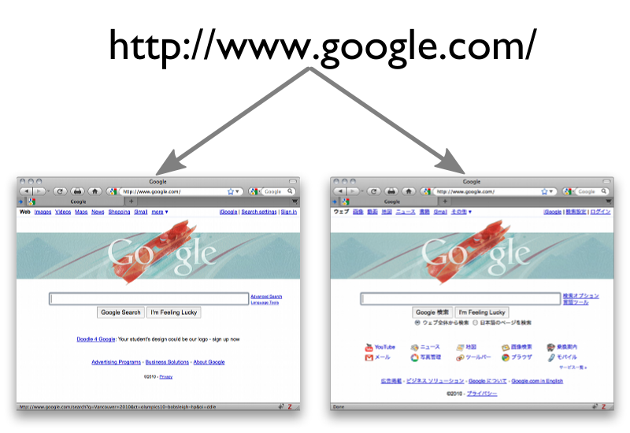
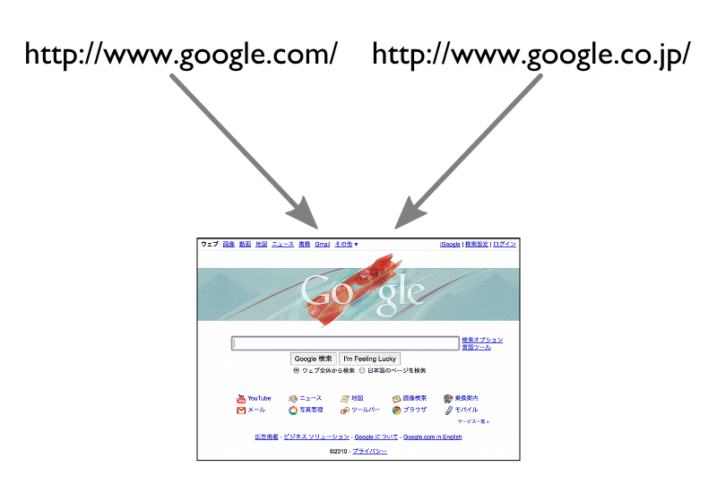
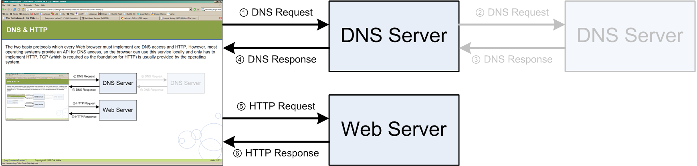
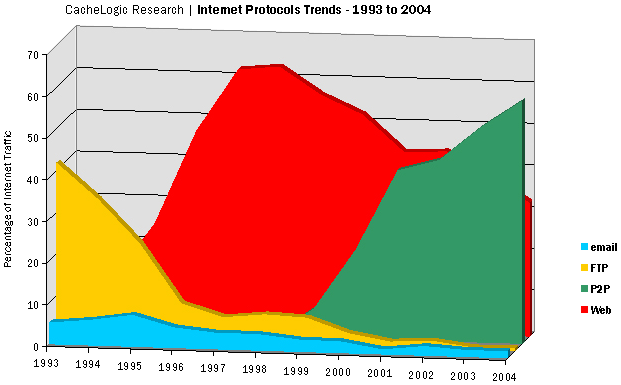
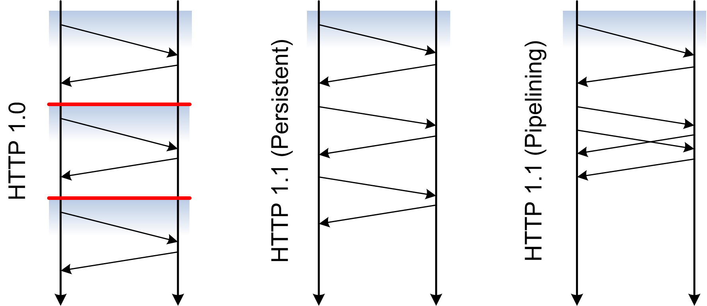
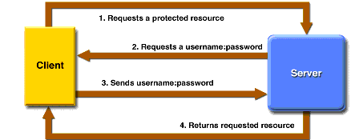

(2) Abstract
The Web's architecture has very simple principles revolving around the ideas of placing a heavy emphasis on a consistent and global identification mechanism for resources, a standardized way of how resource representations can be retrieved, and a standardized way of how resource representations should be usable by using standardized media types. Based on the Internet, the Web's transport protocol transmits representations of resources identified by a Uniform Resource Identifier (URI) between Web servers and clients. The most important protocols for data transfer on the Web is the Hypertext Transfer Protocol (HTTP).
Uniform Resource Identifier (URI)
(5) Resource Identification
- Early hypertext systems usually only identified documents within the scope of a single system (e.g. HyperCard)
- The web uses URIs (Uniform Resource Identifers) as global identifiers
- http://bcnm.berkeley.edu/
- mailto:joehall@ischool.berkeley.edu
- tel:+1-510-684-2179
- urn:isbn:0451450523
Global naming leads to global network effects … the value of an identifier increases the more it is used consistently
[http://www.w3.org/TR/webarch/]
(6) URIs & Resources
- A URI identifies a "resource."
- But what is a resource?
- A resource is anything identified by a URI.
- Resources are a way of conceptually dividing up some information space
(7) URIs & Resources
- URIs do not merely identify; they can be used to access or interact with a resource
- The details of how to do this are determined by the URI’s scheme, e.g. the "http" part of http://bcnm.berkeley.edu/
- The usual method of interacting with a resource is by dereferencing the URI
(8) URI Schemes
URI = scheme ":" hier-part [ "?" query ] [ "#" fragment ]
http://dret.net/lectures/web-spring09/foundations#uri-schemes
- URIs in their general case are very simple
- the scheme identifies how resources are identified
- the identification may be hierarchical or non-hierarchical
- Many URI schemes are hierarchical
- it is then possible to use relative URIs such as in
a href="../"
- the slash character is not just a character, in URIs it has semantics
- Query components specify additional information
- it is non-hierarchical information further identifying the resource
- in most cases, it can be regarded as
input
to the resource
(9) Resources & Representations
- When a URI is dereferenced by a web browser, it receives some data
- That data is called a representation of the resource identified by the URI
- Resources are abstract, representations are concrete
- Resources may have various representations, and they may vary with time
(10) 1 Resource, 2 Representations

(11) 2 Resources, 1 Representation

Hypertext Transfer Protocol (HTTP)
(13) DNS & HTTP
The two basic protocols which every Web browser must implement are DNS
[Internet Architecture; Domain Name System (DNS) (1)] access and HTTP
[Hypertext Transfer Protocol (HTTP) (1)]. However, most operating systems provide an API for DNS access, so the browser can use this service locally and only has to implement HTTP. TCP
[Internet Architecture; Transmission Control Protocol (TCP) (1)] (which is required as the foundation for HTTP) is usually provided by the operating system.

(14) The Web's Protocol

provided by
[http://www.cachelogic.com/]
HTTP Basics
(16) HTTP Messages
- HTTP needs a reliable connection
- the foundation for HTTP is the Transmission Control Protocol (TCP)
[Internet Architecture; Transmission Control Protocol (TCP) (1)]
- DNS resolution yields an IP address
- open TCP connection to port 80 or port specified in URI (
http://rosetta.sims.berkeley.edu:8085/)
- HTTP is a text-based protocol
- the connection is used to transmit text messages
- all HTTP messages are human-readable (not all entities, though)
- basic HTTP operations can be carried out by hand
start-line
message-header *
message-body ?
(18) HTTP Requests
- After opening a connection, the client sends a request
- the method indicates the action to be performed on the resource
- HTTP's most interesting methods are:
GET, HEAD, POST - other interesting methods are:
PUT, DELETE
- The URI identifies the resource to which the request should be applied
- absolute URIs are required when contacting proxies
- absolute paths are required when contacting a server directly
- the URI may contain query information
- The
Host header field must be included in every request
Method Request-URI HTTP/Major.Minor
[Header]*
[Entity]?
(19) HTTP GET
- Retrieval action based on the URI
- maybe implemented by reading a file
- maybe implemented by processing a file (PHP)
- maybe implemented by invoking a process
- Semantics may change based on header fields
If-*: only reply with the entity if necessaryRange: only reply with the requested part of the entity
- Cacheability depends on header fields of the response
GET / HTTP/1.1
Host: ischool.berkeley.edu
(20) HTTP Responses
- The server's response to interpreting a request
- the status code is given numerically and as text
2** for variations of ok
3** for redirections4** are different client side problems (404: not found)5** are different server side problems
- Header fields specify additional information
- information about the server
- information about the entity (media type, encoding, language)
HTTP/Major.Minor Status-Code Text
[Header]*
[Entity]?
(22) HTTP Connection Handling

HTTP Authentication
(24) HTTP Access Control
- HTTP servers can
[http://en.wikipedia.org/wiki/List_of_HTTP_status_codes#4xx_Client_Error] because of access control
401 Unauthorized means the resource is access controlled403 Forbidden means the resource is inaccessible405 Method Not Allowed signals a request using the wrong request method
[HTTP Requests (1)]
- Two different approaches to unauthorized access are possible
- repeat the HTTP request with the proper authentication credentials
- redirect to a Login Page
[Login Page (1)] and establish an authenticated Session
[State Management (Cookies); Session (1)]
(25) HTTP Authentication

(26) Basic HTTP Authentication
- Authentication is based on authentication realms
- a set of resources for which the authentication is required
- an opaque name which is used to signal which login is required
- username/password often is specific for a given realm
- Users supply username and password through the client
- sent as
[http://en.wikipedia.org/wiki/Base64] encoded
username:password
string - username and password are
[http://www.google.com/search?hl=en&q=base64+decoder]
- basic authentication should always use HTTPS
- Authorization is handled on the server side
[http://en.wikipedia.org/wiki/Basic_access_authentication]
[http://en.wikipedia.org/wiki/Basic_access_authentication]
(27) Repeated Access
- Clients typically access more than one protected resource
- a perfectly stateless client would always request authentication from the user
- using the realm clients can identify repeated accesses
- Web interactions by default are perfectly stateless
- each request is completely independent from other requests
- stateless interactions make the Web loosely coupled and scalable
- concepts like the realm or State Management (Cookies)
[State Management (Cookies)] introduce
state
- Clients remember the authentication and replay it automatically
- browsers provide little control over this feature
logging out
of HTTP authenticated sessions is hard
(28) Login Page
- Basic HTTP Authentication
[Basic HTTP Authentication (1)] works with browser controls (including the window)
- no possibility to
log out
without using browser-specific controls - client side security depends on browser security measures
- Using forms gives more freedom in session management
- authentication and authorization are completely application-based
- if there were
secure personal browsers
this would not work very well